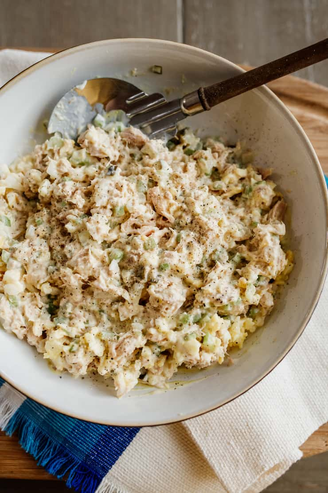

Tuna salad recipe

This is a basic staple in my house. Healthy and yummy with plenty of versatility. Enjoy this tuna salad on a sanwich or with some crackers.
- 1 can of chunk tuna
- 1 tbsp Mayo
- 2 tsp yellow mustard
- 1 celery stalk
- 1 medium carrot
- Chop carrot and celery into small pieces.
- Add tuna, mayo, and mustard into a medium mixing bowl.
- Mix in with the carrot and celery.
- salt and pepper to taste.
- Enjoy on a sandwich or with crackers.